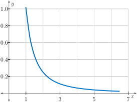

Section 7.4 The Divergence and Integral Tests
Motivating Questions
Are there any properties a series can have to guarantee it diverges? That it converges?
What can integrals tells us about convergence or divergence of certain series?
In Section 7.3, we determined the convergence or divergence of several series by explicitly calculating the limit of a sequence of partial sums \(\left\{ S_k \right\}\text{.}\) In practice, explicitly calculating this limit can be difficult or impossible. Luckily, several tests exist that allow us to determine convergence or divergence for many types of series. In this section, we discuss two of these tests: the divergence test and the integral test. We will examine several other tests in the rest of this chapter.
Preview Activity 7.4.1.
Compute the value of the improper integral \(\int_1^{\infty} \frac{1}{x^2} \ dx\text{.}\)
-
Using \(n=5\text{,}\) sketch the right Riemann sum \(R_5\) for \(\int_1^6 \frac{1}{x^2} \ dx\text{.}\) Is \(R_5\) an underestimate or an overestimate or neither?
Figure 7.4.1. The graph of \(f(x)=\frac{1}{x^2}\) on \([1,6]\text{.}\) Compare \(1+R_5\) (as found above) with \(\sum_{k=1}^6 \frac{1}{k^2}\text{.}\)
For any \(n\text{,}\) how do \(1+R_n\) and \(\int_1^{n+1} \frac{1}{x^2} \ dx\) compare? By extension, how does \(\sum_{k=1}^{n+1} \frac{1}{k^2}\) compare to \(\int_1^{\infty} \frac{1}{x^2} \ dx\) for any \(n\text{?}\)
Discuss the convergence or divergence of \(\sum_{k=1}^{\infty} \frac{1}{k^2}\text{.}\)
Subsection 7.4.1 The Divergence Test
The first question we ask about any infinite series is usually “Does the series converge or diverge?” There is a straightforward way to check that certain series diverge, and we explore this test in the next activity.
Activity 7.4.2.
If the series \(\sum a_k\) converges, then an important result necessarily follows regarding the sequence \(\{a_n\}\text{.}\) This activity explores this result.
Assume that the series \(\sum_{k=1}^{\infty} a_k\) converges and has sum equal to \(L\text{.}\)
What is the \(n\)th partial sum \(S_n\) of the series \(\sum_{k=1}^{\infty} a_k\text{?}\)
What is the \((n-1)\)st partial sum \(S_{n-1}\) of the series \(\sum_{k=1}^{\infty} a_k\text{?}\)
What is the difference between the \(n\)th partial sum and the \((n-1)\)st partial sum of the series \(\sum_{k=1}^{\infty} a_k\text{?}\)
Since we are assuming that \(\sum_{k=1}^{\infty} a_k = L\text{,}\) what does that tell us about \(\lim_{n \to \infty} S_n\text{?}\) Why? What does that tell us about \(\lim_{n \to \infty} S_{n-1}\text{?}\) Why?
Combine the results of the previous two parts of this activity to determine \(\lim_{n \to \infty} a_n = \lim_{n \to \infty} (S_n - S_{n-1})\text{.}\)
The result of Activity 7.4.2 is the following important conditional statement:
If the series \(\sum_{k = 1}^{\infty} a_k\) converges, then the sequence \(\{a_k\}\) of \(k\)th terms converges to 0.
It is logically equivalent to say that if the sequence \(\{a_k\}\) does not converge to 0, then the series \(\sum_{k = 1}^{\infty} a_k\) cannot converge. This statement is called the Divergence Test.
The Divergence Test.
If \(\displaystyle \lim_{k \to \infty} a_k \neq 0\text{,}\) then the series \(\displaystyle \sum_{k=1}^{\infty} a_k\) diverges.
Activity 7.4.3.
Determine if the Divergence Test applies to the following series. If the test does not apply, explain why. If the test does apply, what does it tell us about the series?
\(\displaystyle \sum \frac{k}{k+1}\)
\(\displaystyle \sum (-1)^k\)
\(\displaystyle \sum \frac{1}{k}\)
Note well: be very careful with the Divergence Test. This test only tells us what happens to a series if the terms of the corresponding sequence do not converge to 0. If the sequence of the terms of the series does converge to 0, the Divergence Test does not apply: indeed, as we will soon see, a series whose terms go to zero may either converge or diverge.
Subsection 7.4.2 The Integral Test
The Divergence Test settles the questions of divergence or convergence of series \(\sum a_k\) in which \(\lim_{k \to \infty} a_k \neq 0\text{.}\) Determining the convergence or divergence of series \(\sum a_k\) in which \(\lim_{k \to \infty} a_k = 0\) turns out to be more complicated. Often, we have to investigate the sequence of partial sums or apply some other technique.
Next, we consider the harmonic series 114
The first 9 partial sums of this series are shown following.
This information alone doesn't seem to be enough to tell us if the series \(\sum_{k=1}^{\infty} \frac{1}{k}\) converges or diverges. The partial sums could eventually level off to some fixed number or continue to grow without bound. Even if we look at larger partial sums, such as \(\sum_{n=1}^{1000} \frac{1}{k} \approx 7.485470861\text{,}\) the result isn't particularly convincing one way or another. The Integral Test is one way to determine whether or not the harmonic series converges, and we explore this test further in the next activity.
Activity 7.4.4.
Consider the harmonic series \(\sum_{k=1}^{\infty} \frac{1}{k}\text{.}\) Recall that the harmonic series will converge provided that its sequence of partial sums converges. The \(n\)th partial sum \(S_n\) of the series \(\sum_{k=1}^{\infty} \frac{1}{k}\) is
Through this last expression for \(S_n\text{,}\) we can visualize this partial sum as a sum of areas of rectangles with heights \(\frac{1}{m}\) and bases of length 1, as shown in Figure 7.4.2, which uses the 9th partial sum.
The graph of the continuous function \(f\) defined by \(f(x) = \frac{1}{x}\) is overlaid on this plot.
Explain how this picture represents a particular Riemann sum.
What is the definite integral that corresponds to the Riemann sum you considered in (a)?
Which is larger, the definite integral in (b), or the corresponding partial sum \(S_9\) of the series? Why?
If instead of considering the 9th partial sum, we consider the \(n\)th partial sum, and we let \(n\) go to infinity, we can then compare the series \(\sum_{k=1}^{\infty} \frac{1}{k}\) to the improper integral \(\int_{1}^{\infty} \frac{1}{x} \ dx\text{.}\) Which of these quantities is larger? Why?
Does the improper integral \(\int_{1}^{\infty} \frac{1}{x} \ dx\) converge or diverge? What does that result, together with your work in (d), tell us about the series \(\sum_{k=1}^{\infty} \frac{1}{k}\text{?}\)
The ideas from Activity 7.4.4 and Preview Activity 7.4.1 hold more generally. Suppose that \(f\) is a continuous decreasing function and that \(a_k = f(k)\) for each value of \(k\text{.}\) Consider the corresponding series \(\sum_{k=1}^{\infty} a_k\text{.}\) The partial sum
can always be viewed as a left hand Riemann sum of \(f(x)\text{,}\) using rectangles with bases of width 1 and heights given by the values \(a_k\text{.}\) A representative picture is shown at left in Figure 7.4.3. Since \(f\) is a decreasing function, we have that
Taking the limit as \(n\) goes to infinity shows that
Therefore, if the improper integral \(\int_{1}^{\infty} f(x) \ dx\) diverges, so does the series \(\sum_{k=1}^{\infty} a_k\text{.}\)

What's more, if we look at the right hand Riemann sums of \(f\) on \([1,n]\) as shown at right in Figure 7.4.3, we see that
So if \(\int_{1}^{\infty} f(x) \ dx\) converges, then so does \(\sum_{k=2}^{\infty} a_k\text{,}\) which also means that the series \(\sum_{k=1}^{\infty} a_k\) also converges. Our preceding discussion has demonstrated the truth of the Integral Test.
The Integral Test.
Let \(f\) be a real valued function and assume \(f\) is decreasing and positive for all \(x\) larger than some number \(c\text{.}\) Let \(a_k = f(k)\) for each positive integer \(k\text{.}\)
If the improper integral \(\int_{c}^{\infty} f(x) \, dx\) converges, then the series \(\sum_{k=1}^{\infty} a_k\) converges.
If the improper integral \(\int_{c}^{\infty} f(x) \, dx\) diverges, then the series \(\sum_{k=1}^{\infty} a_k\) diverges.
The Integral Test compares a given infinite series to a natural, corresponding improper integral and says that the infinite series and corresponding improper integral both have the same convergence status. In the next activity, we apply the Integral Test to determine the convergence or divergence of a class of important series.
Activity 7.4.5.
The series \(\sum \frac{1}{k^p}\) are special series called \(p\)-series. We have already seen that the \(p\)-series with \(p=1\) (the harmonic series) diverges. We investigate the behavior of other \(p\)-series in this activity.
Evaluate the improper integral \(\int_1^{\infty} \frac{1}{x^2} \ dx\text{.}\) Does the series \(\sum_{k=1}^{\infty} \frac{1}{k^2}\) converge or diverge? Explain.
Evaluate the improper integral \(\int_1^{\infty} \frac{1}{x^p} \ dx\) where \(p \gt 1\text{.}\) For which values of \(p\) can we conclude that the series \(\sum_{k=1}^{\infty} \frac{1}{k^p}\) converges?
Evaluate the improper integral \(\int_1^{\infty} \frac{1}{x^p} \ dx\) where \(p \lt 1\text{.}\) What does this tell us about the corresponding \(p\)-series \(\sum_{k=1}^{\infty} \frac{1}{k^p}\text{?}\)
-
Summarize your work in this activity by completing the following statement.
The \(p\)-series \(\sum_{k=1}^{\infty} \frac{1}{k^p}\) converges if and only if .
Definition 7.4.4. The \(p\)-series.
For any real number \(p\text{,}\) the seriesConvergence of \(p\)-series.
The series
converges if \(p > 1\) and diverges if \(0 < p \leq 1\text{.}\)
Subsection 7.4.3 Summary
Divergence Test: For a series \(\sum_{k=1}^{\infty} a_k\) to converge, the \(k\)th term \(a_k\) must satisfy \(a_k \longrightarrow 0\) as \(k \longrightarrow \infty\text{.}\)
Integral Test: For a series \(\sum_{k=1}^{\infty} a_k\) of positive terms \(a_k\text{,}\) if \(a_k = f(k)\) for a continuous, decreasing function \(f\) (for all \(k \geq K\text{,}\) some \(K\)), then \(\sum_{k=1}^{\infty} a_k\) and \(\int_K^{\infty} f(x) \ dx\) both converge or both diverge.
Exercises 7.4.4 Exercises
1. Convergence of a series and its sequence.
Let
For the following answer blanks, decide whether the given sequence or series is convergent or divergent. If convergent, enter the limit (for a sequence) or the sum (for a series). If divergent, enter 'infinity' if it diverges to \(\infty\text{,}\) '-infinity' if it diverges to \(- \infty\) or 'DNE' otherwise.
(a) The series \(\displaystyle \sum_{n=1}^\infty \frac{8n}{8n+3}\text{.}\)
(b) The sequence \(\displaystyle \biggl \lbrace \frac{8n}{8n+3} \biggr \rbrace\text{.}\)
2. Convergence of a sequence and related series.
Given:
\(\displaystyle A_n = \frac{9^{n}}{90}\)
Determine:
(a) whether \(\displaystyle \sum_{n=1}^\infty( A_n )\) is convergent.
(b) whether \(\lbrace A_n \rbrace\)is convergent.
If convergent, enter the limit of convergence. If not, enter DIV.
3. What does the integral test say?
Suppose \(a(x)\) is a continuous, positive, decreasing function for \(x\) in the interval \(\lbrack 1, \infty)\text{,}\) and \(\lbrace a_n \rbrace\) is the sequence defined by \(a_n = a(n)\) for every natural number \(n\text{.}\)
If \(\displaystyle{ \sum_{n=1}^{\infty} a_n }\) diverges, then \(\displaystyle{\int_{1}^{\infty} a(x) \, dx }\)
choose
converges
diverges
cannot be determined
\(\displaystyle \sum_{n=1}^{\infty} a_n \lt a_1 + \int_{1}^{\infty} a(x) \, dx\text{.}\)
\(\displaystyle \sum_{n=1}^{\infty} a_n \lt \int_{1}^{\infty} a(x) \, dx\text{.}\)
\(\displaystyle \int_{0}^{\infty} a(x) \, dx \lt \sum_{n=1}^{\infty} a_n\text{.}\)
\(\displaystyle \int_{1}^{\infty} a(x) \, dx \lt \sum_{n=1}^{\infty} a_n\text{.}\)
If \(\displaystyle{ \sum_{n=1}^{\infty} a_n }\) converges, then \(\displaystyle{\int_{1}^{\infty} a(x) \, dx }\)
choose
converges
diverges
cannot be determined
\(\displaystyle \int_{1}^{\infty} a(x) \, dx \lt \sum_{n=1}^{\infty} a_n\text{.}\)
\(\displaystyle \int_{0}^{\infty} a(x) \, dx \lt \sum_{n=1}^{\infty} a_n\text{.}\)
\(\displaystyle \sum_{n=1}^{\infty} a_n \lt \int_{1}^{\infty} a(x) \, dx\text{.}\)
\(\displaystyle \sum_{n=1}^{\infty} a_n \lt a_1 + \int_{1}^{\infty} a(x) \, dx\text{.}\)
4. Convergence of an integral and a related series.
Compute the value of the following improper integral. If it converges, enter its value. Enter infinity if it diverges to \(\infty\text{,}\) and -infinity if it diverges to \(-\infty\text{.}\) Otherwise, enter diverges.
\(\displaystyle \int_{1}^{\infty} \frac{3 \, dx}{x^2 + 1}\) =
Does the series \(\displaystyle \sum_{n=1}^{\infty} \frac{3}{n^2 + 1}\) converge or diverge?
converges
diverges to +infinity
diverges to -infinity
diverges
5. Applying the integral test.
Use the integral test to determine whether each of the following series converges or diverges. For each, fill in the integrand and the value of the integral. Enter diverges if the integral diverges. Then indicate the convergence of the sum.
A. \(\sum\limits_{n=1}^{\infty} {1\over 4^n}\)
Compare with \(\int_c^{\infty}\) \(dn\) =
(Evaluate your integral with bottom limit \(c = 1\text{.}\))
This sum
converges
diverges
B. \(\sum\limits_{n=1}^{\infty} {n+7\over n^2 + 14 n + 9}\)
Compare with \(\int_c^{\infty}\) \(dn\) =
(Evaluate your integral with bottom limit \(c = 1\text{.}\))
This sum
converges
diverges
6. Applying the integral test on an exponential series.
Compute the value of the following improper integral. If it is divergent, type "Diverges" or "D".
Answer:
Using the improper integral from above and the Integral Test, determine whether the following series converges or diverges. Answer "Converges" or "Diverges."
Answer:
Converges
Diverges
7.
Select the series below that diverge by the divergence test.
\(\displaystyle \sum_{k=1}^{\infty} \frac{1}{k}\)
\(\displaystyle \sum_{k=1}^{\infty} \frac{k^2}{k+1}\)
\(\displaystyle \sum_{k=1}^{\infty} \sin k\)
\(\displaystyle \sum_{k=1}^{\infty} \sin (\pi k)\)
8.
Select the series below whose terms satisfy the conditions to apply the integral test.
\(\displaystyle \sum_{k=1}^{\infty} \frac{1}{k}\)
\(\displaystyle \sum_{k=1}^{\infty} \frac{k^2}{k+1}\)
\(\displaystyle \sum_{k=1}^{\infty} \sin k\)
\(\displaystyle \sum_{k=1}^{\infty} \frac{\sin k + 1}{k^2}\)
9.
Give an example of a series \(\sum_{k=a}^{\infty} a_k\text{,}\) with a function \(f(x)\) such that \(f(k)=a_k\) for all whole numbers \(k\text{,}\) such that
\(\int_a^{\infty} f(x) \ dx\) diverges, while
\(\sum_{k=a}^{\infty} a_k\) converges.
10.
Does the series \(\sum_{k=2}^{\infty} \frac{k^2}{3k^2 + \sqrt{k}}\) converge?